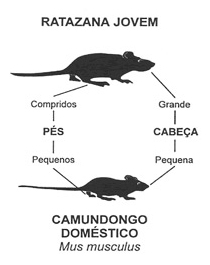
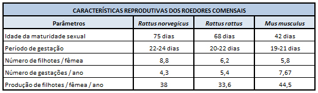
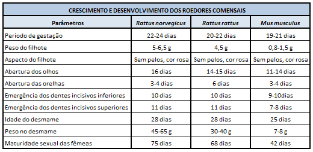
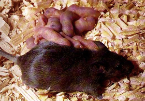

CAMUNDONGO - (Mus musculus)
O adulto possui corpo delgado com 8 a 9 cm de comprimento podendo pesar de 10 a 21 gramas. Com pelagem delicada e sedosa, orelhas grandes e salientes em relação a cabeça afilada, olhos pretos e salientes de tamanho pequeno em relação ao resto da cabeça. As patas são escuras e sem membranas interdigitais. A cauda é fina e sem pêlos medindo 8 a 10 cm. São de hábito noturno e escondem-se com extrema facilidade em locais estreitos e de difícil acesso. Possuem um raio de ação de 03 a 09 m em relação ao abrigo.
Possui uma vida média de 12 meses sendo sexualmente maduro entre 42-45 dias de idade. A gestação da fêmea dura de 19 a 21 dias com 05 a 06 ninhadas por ano. Cada ninhada possui de 4 a 8 filhotes com uma média de sobrevivência de 30 filhotes após o desmame por fêmea/ano. Os ninhos são geralmente terrestres e acima do solo, geralmente no interior de residências. Realizam seus ninhos em guarda-roupas, frestas de rodapés, prateleiras de livros e móveis em geral onde notamos a presença de pelos, restos de alimentos, fiapos de pano, papel e outros detritos. Escalam com facilidade abrigando-se em despensas, armários, espaços internos nas paredes e depósitos. Se alimentam de cereais, farelos, pão e queijos (3 g/dia) e possuem pouca exigência quanto ao consumo de água. As fezes são em forma de bastonete. As roeduras são delicadas, geralmente grãos parcialmente roídos e abandonados.

ASPECTOS BIOLÓGICOS
Os roedores possuem uma grande capacidade reprodutiva, sendo limitada apenas por certos fatores como doenças, falta de alimento e abrigo. São dotados de uma série de características sensoriais e físicas.
Os ratos possuem hábito noturno, saindo de suas tocas a luz do dia quando o nível populacional está muito elevado e o alimento disponível é insuficiente para alimentar a colônia.



Características Físicas
Os roedores são providos de um excelente equilíbrio se locomovendo verticalmente e horizontalmente com extrema facilidade em ambientes estreitos como tubulações, canos e conduítes. Podem subir pelo interior de calhas cm 4,0 a 10,0 cm de diâmetro e escalar externamente canos e calhas com até 9,5 cm de diâmetro. Camundongos e jovens ratos podem passar em uma fresta de apenas 0,5 cm de abertura, e os demais em qualquer fresta pela qual passe sua cabeça.
Os dentes incisivos destes animais podem roer diversos materiais desde que sejam mais macios que o esmalte do próprio dente, como por exemplo os cabos telefônicos, tubulações de pvc, alumínio, tijolos e outros.
Os camundongos constróem ninhos dentro de paredes, interior de residências, rede de esgoto abandonada, jardins, onde haja acúmulo de materiais (papelões e papéis).
ASPECTOS COMPORTAMENTAIS
O olfato é uma habilidade sensorial muito apurada nos roedores. Costumam marcar as trilhas as quais percorrem podendo delimitar áreas e detectar condições favoráveis ao acasalamento. Não estranham o odor do ser humano. O tato é um dos sentidos mais desenvolvido nos ratos, principalmente devido à presença dos pêlos sensitivos, presos ao focinho, e pêlos tácteis, ao longo do corpo. Os pêlos sensitivos permite-lhes orientar-se no escuro, enquanto os pêlos tácteis possibilita-lhes percorrer superfícies de difícil equilíbrio como o caso de fios e cabos elétricos.
A audição é muito aguçada e sensível a ruídos estranhos, habilidade muito importante devido ao hábito noturno. Os ratos podem adaptar-se aos ruídos e também aos ultra-sons. A visão é adaptada para ambientes escuros, são sensíveis a luz e não enxergam muito bem, não percebem as cores, somente as variações de claro e escuro.
O paladar é altamente desenvolvido podendo discriminar e memorizar os diferentes gostos, rejeitando alimentos estragados e identificar raticidas misturados ao alimento.
HÁBITOS ALIMENTARES
O camundongo é uma espécie muito curiosa a mudanças que ocorram ao seu redor, e não precisam de muita água para sobreviver.
ESTRUTURA SOCIAL
Os ratos são animais que vivem em grupos e convivem em colônia que consiste de pequenas famílias com um macho adulto dominando uma ou mais fêmeas adultas e suas respectivas ninhadas. Os machos dominantes protegem a área pertencente a colônia dividindo-a pelo número de ninhos existentes. O território da colônia nem sempre é uma área delimitada e fechada, sendo constituída apenas de trilhas marcadas por urina e secreções que servem de orientação. Os ratos dominante da colônia são machos e fêmeas mais forte e em idade de reprodução, e os dominados os ratos jovens ou muito velhos. Os machos dominantes expulsam os outros machos os quais permanecem à margem do território, alimentando-se das sobras do dominante. Porém ao identificarem uma nova fonte de alimento (iscas) no território, o dominante espera o dominado ingerir parte deste novo alimento no aguardo de sinais que indiquem que este alimento é seguro. Por isso que os raticidas que possuem efeito imediato demonstram resultado satisfatório no início do controle, e após um período reaparece a infestação com os ratos sobreviventes, ou seja, os dominantes que não ingeriram a isca e passam a rejeitá-la e o local em que se encontrava.
O comportamento social destes roedores confere a colônia um maior número de fêmeas, maior taxa de reprodução e localização estratégica dos ninhos em relação as fontes de alimento e água. A disponibilidade de abrigo, alimento e água determinam o potencial da colônia, podendo ser maior ou menor o número de indivíduos. As áreas urbanas no modelo atual propiciam condições ideais para a proliferação destes roedores. O lixo acumulado e os lixões constituem-se em uma grande fonte alimentar para estes animais. A água pode ser obtida nos alimentos, córregos, redes fluviais, vazamentos e caixas dágua descobertas. Pela facilidade em cavar e escalar estes roedores encontram com facilidade locais para construção e/ou instalação de seus ninhos. Onde ocorre abundância de alimento podemos encontrar mais de uma espécie de roedores. No caso de limitação de alimento geralmente encontramos uma única espécie.
A alta taxa reprodutiva, rápida maturação sexual e grande número de filhotes em cada gestação são alguns dos fatores que favorecem a explosão populacional destes roedores. Os fatores que limitam o crescimento populacional são principalmente a disponibilidade de alimentos e a ação do homem no controle destes animais. Os cães e gatos domésticos não representam um fator eficiente no controle populacional de roedores.
A quantidade de roedores nas diferentes faixas etárias, em uma colônia varia com a taxa de reprodução, mortalidade e migração, que são diretamente afetados pela disponibilidade de alimento, abrigo e água; doenças e parasitas dos roedores a ação do homem. O crescimento de uma colônia ocorre lentamente no seu início e rapidamente após um certo período, até os recursos no território da colônia ficarem limitados. O superpovoamento do espaço territorial acarreta luta entre os roedores, queda na taxa de fertilidade das fêmeas, canibalismo com os recém-nascidos e como conseqüência destes fatores o declínio da população. Por último ocorre a migração para outras áreas com melhores condições de sobrevivência, podendo ser interpretada até como uma dispersão forçada, destes roedores. Após o retorno do equilíbrio no territorial da colônia, esta volta a crescer acentuadamente até esgotar novamente os recursos disponíveis e as conseqüências acima mencionadas voltam a acorrer.
DOENÇAS
Os ratos são ainda responsáveis pela transmissão de inúmeras doenças ao homem. A Organização Mundial da Saúde já catalogou cerca de 200 doenças transmissíveis, destacando-se a leptospirose, hantavirose, tifo, peste bubônica, febre hemorrágica, salmonelose, nefrite epidêmica, sarnas, micoses, helmintíases entre outras.
Fonte: Pragas Online